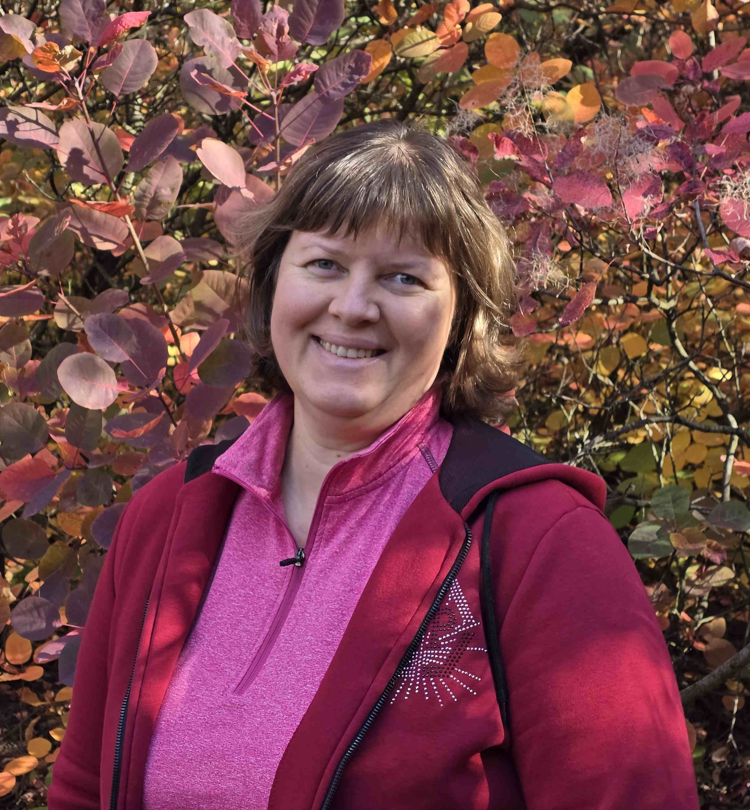

Знання через інтерес
Створюю уроки, які зацікавлюють, навчають мислити та допомагають дитині відчувати радість від відкриття нового.
Вчитель • Педагог • Наставник
Я — Наход Наталія, вчителька ліцею №21 "Перспектива" ДМР. Моя робота — створювати атмосферу довіри, впевненості та творчості, щоб кожна дитина відчувала себе важливою, розумною та успішною.

Вчителька ліцею №21 "Перспектива" ДМР
Про мене
Моя педагогічна діяльність спрямована на розвиток інтересу до знань, формування самостійності, відповідальності та впевненості в собі. Я люблю працювати з дітьми, допомагати їм відкривати свої сильні сторони, вчити мислити творчо та діяти сміливо.
Мій підхід
Створюю уроки, які зацікавлюють, навчають мислити та допомагають дитині відчувати радість від відкриття нового.
Важливо не лише пояснити тему, а й допомогти кожній дитині відчути себе в безпеці, прийнятою та зрозумілою.
Підтримую не лише навчальні досягнення, а й розвиток особистості, емпатії, відповідальності та любові до життя.
“Дитина вчиться краще тоді, коли знає, що її слухають, цінують і вірять у неї.”